Este es el más amplio de todos los planos. Se utiliza, generalmente, para mostrar paisajes y es conocido también como plano panorámico. En un gran plano general, el protagonista es el espacio. Suele realizarse con objetivos súper angulares u ojos de pez.
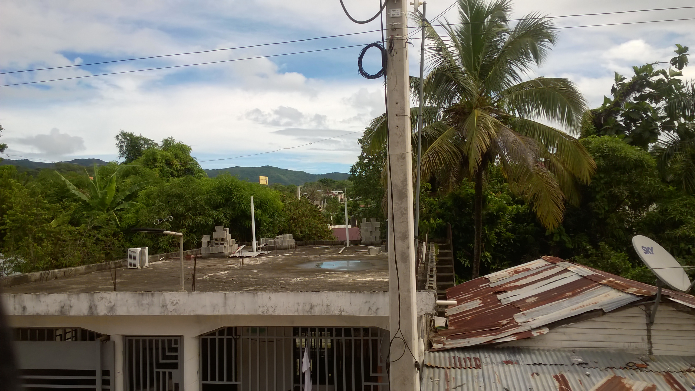Si bien es bastante similar al anterior, en este caso el plano es menos amplio y se toma como punto de interés a un sujeto dentro del encuadre. Tanto el paisaje como la persona serán protagonistas.
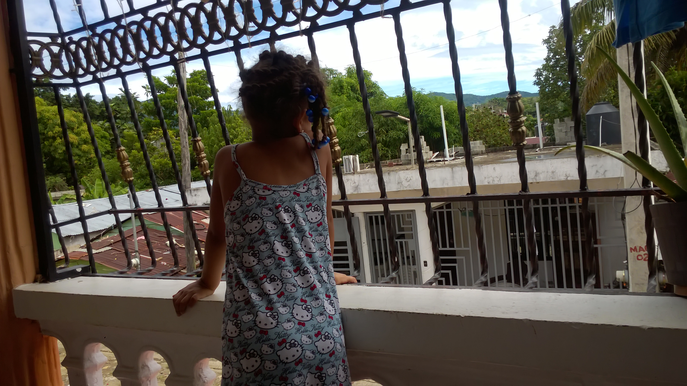En la fotografía de retrato, el plano entero es aquel en el que el protagonista aparece de pies a cabeza. Es decir, que capturaremos todo su cuerpo. A diferencia del plano general, el paisaje queda en segundo plano, siendo protagonista la figura humana.
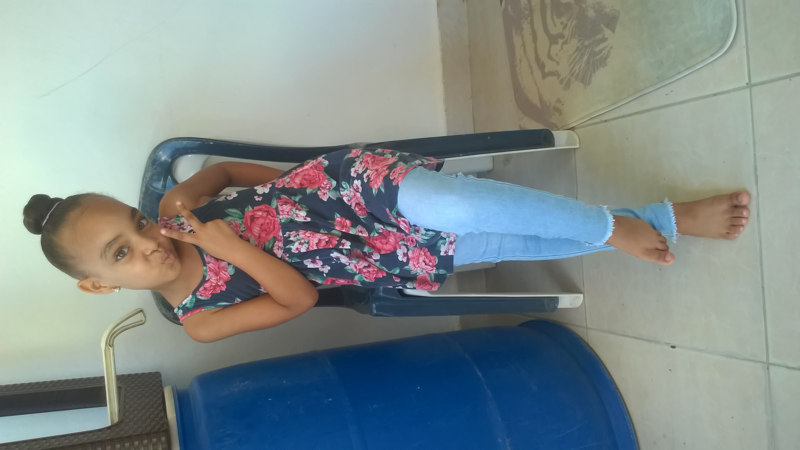
Este tipo de plano recibe su nombre de las películas de western. En estas era crucial mostrar las caderas de los vaqueros, ya que era desde donde desenfundaban sus armas. Es un plano estrictamente para fotografía de retrato, también conocido como ¾ (tres cuartos).
En el plano americano el personaje es visible en la imagen resultante de la cabeza hasta las rodillas. Es muy importante no cortar el plano exactamente en la articulación, sino un poco más arriba, a medio muslo. De no ser así, se considerará un error técnico.
El plano medio es algo más cerrado que el americano. Utilizado mayormente en retratos y moda, es un plano que aporta un sentido de mayor intimidad, ya que se está más cerca del sujeto. El rostro será protagonista, al igual que los brazos y manos mostrando al sujeto desde la cintura.
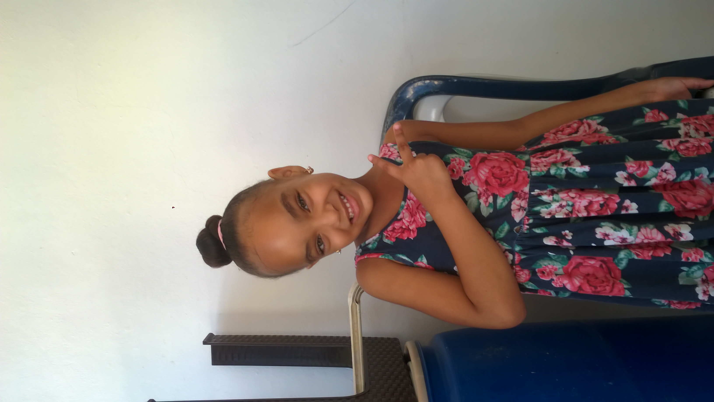En este tipo de plano, el rostro se muestra más cercano y su expresividad tendrá el papel protagonista, encuadrando el rostro y busto de la persona.
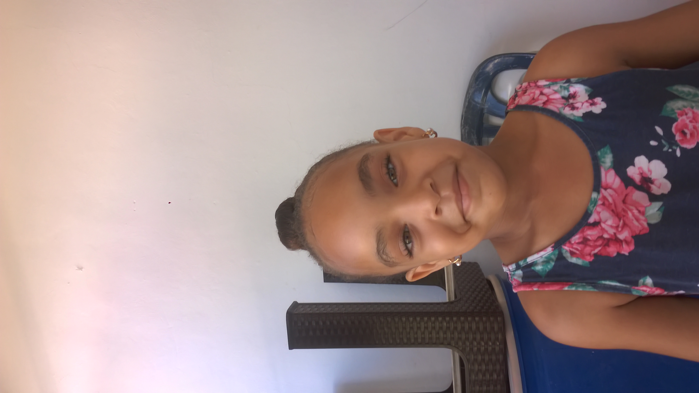Los primeros planos son esencialmente retratos. Se centran en el rostro y las expresiones del mismo. El clásico primer plano abarca desde la cabeza hasta los hombros y el nivel de proximidad al modelo es alto. La pose del cuerpo no será relevante, pero sí la expresión y actitud facial.
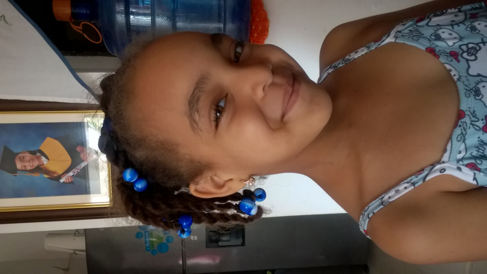Si te sigues acercando al sujeto, lograrás un primerísimo primer plano. Los hombros ya no aparecen en la toma, y se corta desde la frente hasta la barbilla. Aquí la intimidad domina por completo la escena y la emoción y expresividad resaltan en los ojos del modelo
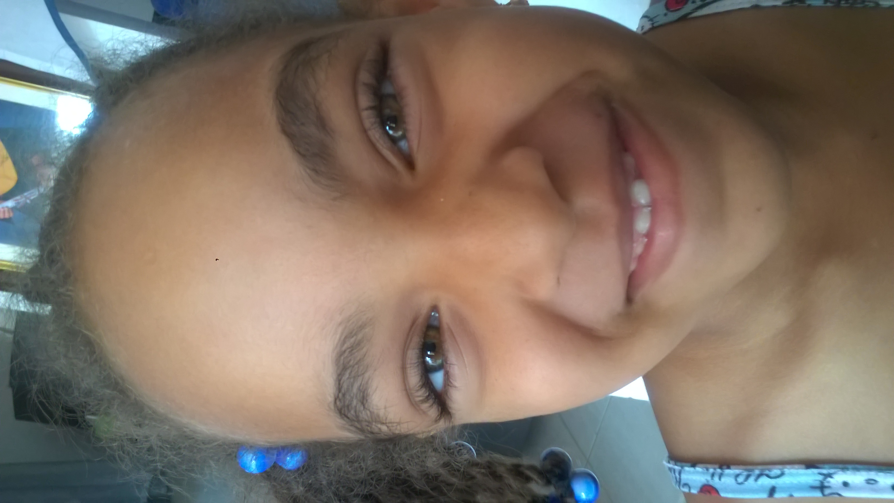Este tipo de plano es el más cercano. Por lo general, se utiliza para resaltar alguna parte del rostro, pero también puede usarse con cualquier otra fracción del cuerpo. El plano detalle se centra en una porción del sujeto.
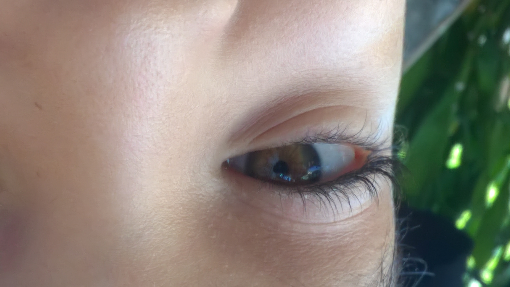Plano cenital: para lograr este plano, la cámara debe colocarse por encima del modelo en un ángulo de 90 grados. Ofrece resultados muy llamativos y distintos y es el plano más habitual en el uso de drones.
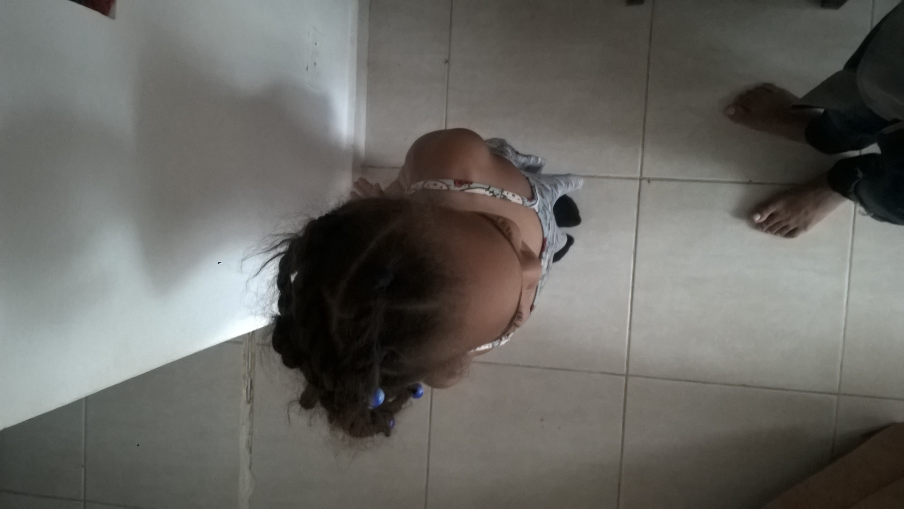Plano picado: en este tipo de plano, la cámara se posiciona por encima y frente al modelo u objeto, con una leve inclinación hacia abajo. Esta posición ayudará a crear la sensación de empequeñecer al modelo o sujeto.
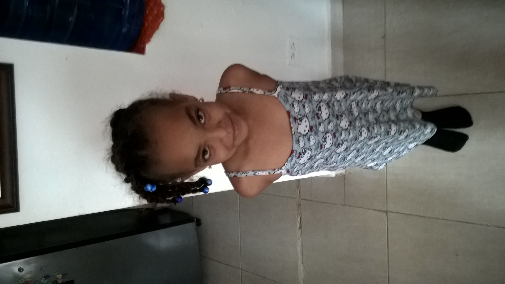Plano contrapicado: En este caso se genera lo contrario al plano anterior. La cámara se posiciona por debajo del sujeto u objeto, con una leve angulación hacia arriba. De este modo, magnificará y dará importancia al modelo o sujeto.
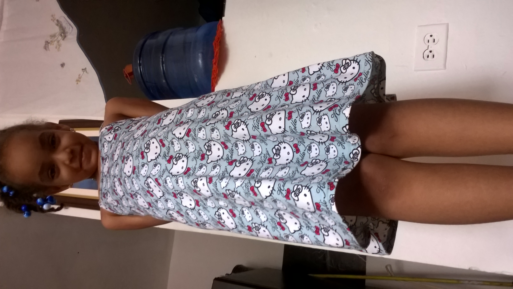Plano normal: Se considera como el plano normal aquel que no tiene ninguna angulación particular de cámara. Esta se encuentra posicionada paralela al suelo y a la misma altura que los ojos del sujeto.
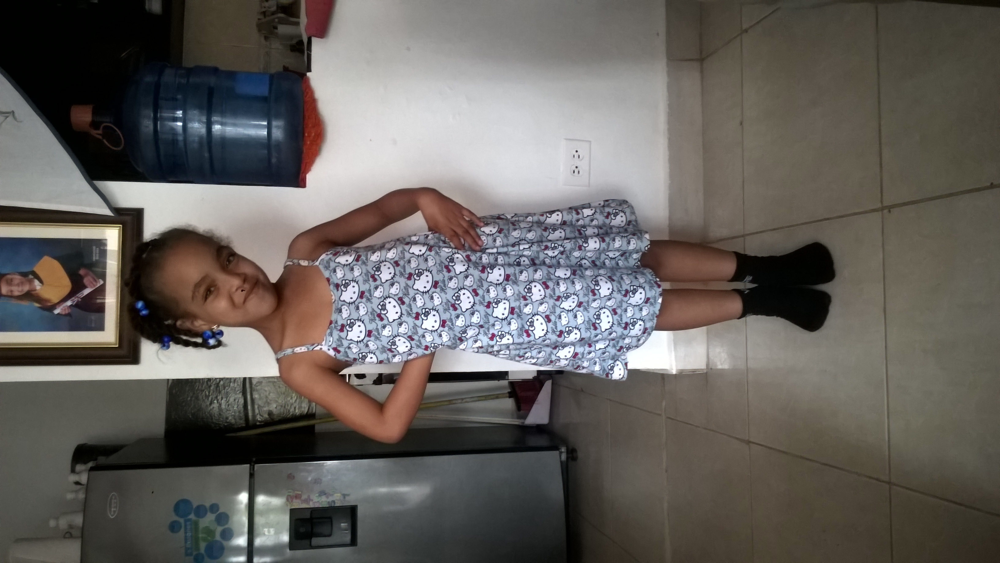Plano nadir: es el plano opuesto en posición al cenital. En este caso, la cámara se coloca por debajo del objeto o modelo, mirando hacia arriba en un ángulo de 90 grados. Suele ser menos utilizado y puede aportar mucha creatividad a tu fotografía.
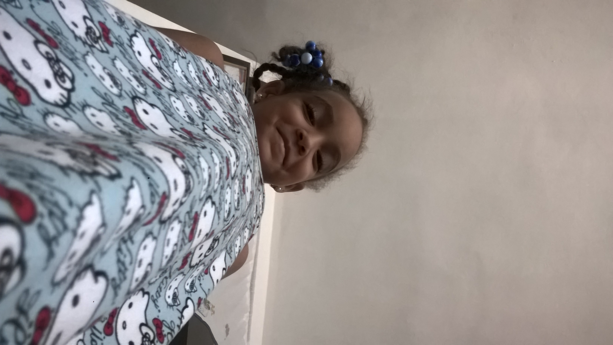